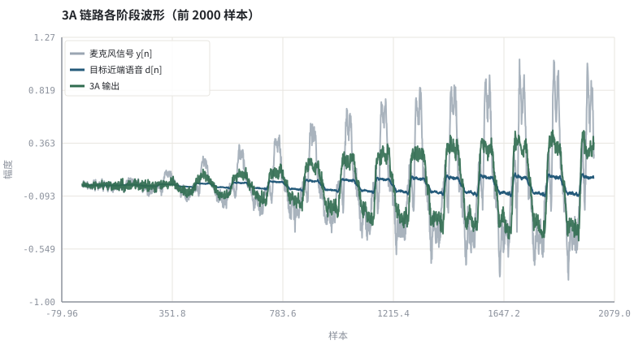
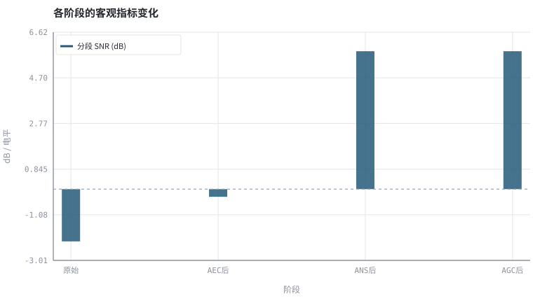

第 00 章3A 是什么：一条实时语音链路上的三个约束
把「通话里听起来不舒服」拆成三个可建模、可测量、可分别优化的估计问题。
本章位置：全书入口。第 01 章 · 声学链路与信号模型：房间、麦克风与回声路径 把 h 与房间讲清楚，第 02 章 · 采样、量化与时频表示：从 PCM 到 STFT 建立时频工具，第 03 章 · 怎么算「变好了」：客观指标、尺度与主观听测 约定「变好了」怎么算；上卷从 第 04 章 · 线性系统、卷积与频域实现 开始实现。
3A 是一条流式处理管道：x[n] 是旁路输入，y[n] 是主数据流，AEC 是有参考的抵消器、ANS 是统计滤波器、AGC 是输出限幅器。任何一环用了未来帧，整条链路就不再是因果系统。
- 能画出一条实时语音链路，并标出 AEC / ANS / AGC 各自作用的位置。
- 能说明为什么三者的顺序不能随意交换。
- 能写出每个模块的输入、输出与典型指标。
- 能运行全书第一个实验，听到处理前后的差别并核对数值。
§知识点地图
每个知识点都配了 1～2 个扩展学习链接；本章完整资源清单见 扩展学习。
| # | 知识点 | 扩展学习 | 状态 |
|---|---|---|---|
| 1 | 实时语音链路 | RFC 3550 RTP ↗ · WebRTC 官网 ↗ | 正文已覆盖 |
| 2 | AEC 回声消除 | Echo cancellation ↗ · WebRTC AEC3 模块 ↗ | 正文已覆盖 |
| 3 | ANS 噪声抑制 | ffmpeg afftdn ↗ · Microsoft DNS Challenge ↗ | 正文已覆盖 |
| 4 | AGC 自动增益控制 | Automatic gain control ↗ · ffmpeg dynaudnorm ↗ | 正文已覆盖 |
| 5 | 三个约束的耦合 | Echo cancellation ↗ · WebRTC 官网 ↗ | 正文已覆盖 |
| 6 | 3A 处理顺序 | Echo cancellation ↗ · WebRTC 官网 ↗ | 正文已覆盖 |
| 7 | 因果性与算法延迟 | RFC 3550 RTP ↗ · MDN Web Audio API ↗ | 正文已覆盖 |
| 8 | 客观与主观评价 | ITU-T P.862 PESQ ↗ · DNSMOS ↗ | 正文已覆盖 |
§0.1从一次视频会议说起
你对着笔记本说话，对方的声音从扬声器放出来，又被同一个麦克风收回去——这就是声学回声；空调、键盘、风扇是加性噪声；你离麦克风忽远忽近、有人轻声有人大嗓门，是电平起伏。三类退化同时出现在一段波形里，却在数学上是三种不同的可估计量。
y[n] = d[n] + h * x[n] + v[n] ，g（增益）在采集后端作用
其中 x[n] 是远端参考信号、h 是房间回声路径、d[n] 是近端语音、v[n] 是环境噪声、y[n] 是麦克风信号。3A 的任务就是：在只知道 x[n] 与 y[n] 的条件下，把 d[n] 尽量干净、等响地交给编码器。
| 模块 | 要消掉什么 | 已知什么 | 核心方法 | 典型指标 |
|---|---|---|---|---|
| AEC | h * x（回声） | 远端参考 x | 自适应辨识 ĥ + 残余抑制 | ERLE / 双讲MOS |
| ANS | v（噪声） | 只有 y | 噪声功率估计 + 谱增益 | segSNR / STOI / DNSMOS |
| AGC | 电平起伏 | 输出电平 | 包络跟踪 + 平滑增益 | LUFS / 峰值余量 |
§0.2为什么是「三」个而不是一个
三者的可观测性不同：AEC 有参考信号，是监督式系统辨识；ANS 没有参考，只能靠统计假设区分语音与噪声；AGC 不区分内容，只改整体尺度。把它们做成一个黑箱模型并非不行，但工程上分开有三个硬理由：
- 顺序有物理约束：AGC 若放在 AEC 前面会改变回声路径增益，使自适应滤波器不断追一个移动的目标；AEC 必须在 AGC 之前、且用未加工的参考信号。
- 失效模式可隔离：双讲漏回声、音乐噪声、增益泵浦分别可定位到具体模块。
- 算力与延迟可预算：每块单独估算 MIPS、内存与算法延迟，便于端侧裁剪。
信号 → 系统 → 估计 → 适应 → 感知 → 数据驱动 → 部署。上卷把每个模块写成可手推的估计器；下卷把同一批估计器换成可学习的函数，但链路结构、因果约束与评价指标完全不变。
§0.3两卷的分工与阅读方式
| 上卷 · 传统算法（04–18） | 下卷 · AI 算法（19–31） | |
|---|---|---|
| 先验 | 声学模型 + 统计假设 + 最优滤波 | 数据分布 + 网络归纳偏置 |
| 参数 | 步长、滤波器长度、时间常数，可解释 | 权重由数据训练得到，需专门做可解释性 |
| 数据 | 不需要训练集，逐帧在线自适应 | 需要成对的干净/退化语料与增强策略 |
| 优势 | 低算力、低延迟、可证明收敛 | 非线性失真、非平稳噪声下上限更高 |
| 弱点 | 非线性回声、突发噪声、强混响 | 分布外泛化、算力与黑箱 |
| 主流做法 | WebRTC AEC3 / SpeexDSP | RNNoise / DNS Challenge 系列 / 混合系统 |
今天的工业系统几乎都是混合式：经典 AEC 做线性消除，神经网络做残余回声与噪声抑制，再用传统 AGC 收尾。因此两卷不是替代关系，而是同一条链路的两层。
§Python 实验
实验 0-1 · 造一条含回声、噪声与电平起伏的链路，逐个打开 3A
#!/usr/bin/env python3
# -*- coding: utf-8 -*-
"""合成一整段退化语音，依次施加理想 AEC、谱减 ANS 与 AGC，打印每步指标并生成可试听 WAV。
全部语音 / 噪声 / 房间冲激响应均为代码合成信号，仅用于教学演示机制与量级。
"""
from __future__ import annotations
import math
import pathlib
import random
import statistics
import sys
import time
_here = pathlib.Path(__file__).resolve()
for _p in _here.parents:
if (_p / "tools" / "dsp.py").exists():
sys.path.insert(0, str(_p / "tools"))
break
from dsp import (SAMPLE_RATE, fft, hann, stft, istft, magnitude_db, spectrum,
white_noise, tone, chirp, synthetic_speech, rir, convolve,
fft_convolve, delay, clip, normalize_peak, rms, rolling_rms,
smooth, db, energy_db, snr_db, erle_db, seg_snr_db,
scale_align, si_sdr_db, lufs_approx,
write_wav, read_wav, wav_info)
from chart import Chart, heatmap, BLUE, RED, GREEN, AMBER
FIG = _here.parents[1] / "fig"
AUDIO = _here.parents[1] / "audio"
FIG.mkdir(exist_ok=True)
AUDIO.mkdir(exist_ok=True)
random.seed(7)
# ---- 参数区 ----
N = 16000 # 1 秒 @ 16 kHz
NOISE_AMP = 0.020 # 环境噪声幅度
ECHO_GAIN = 2.00 # 回声路径整体增益
FAR_GAIN = 0.35 # 近端语音电平（模拟说话人忽远忽近）
SUB_FACTOR = 1.20 # 谱减过减因子
FLOOR = 0.12 # 谱增益下限（抑制音乐噪声）
# ---- 计算与作图 ----
rng = random.Random(7)
far = synthetic_speech(rng, N) # 远端说话（将成为回声）
near = synthetic_speech(rng, N) # 近端说话（目标）
h = rir(rng, 192, decay=0.012)
echo = [ECHO_GAIN * v for v in fft_convolve(far, h)[:N]]
noise = white_noise(rng, N, NOISE_AMP)
level = [FAR_GAIN * (0.6 + 0.4 * math.sin(2 * math.pi * i / N)) for i in range(N)]
clean = [near[i] * level[i] for i in range(N)]
mic = [clean[i] + echo[i] + noise[i] for i in range(N)]
# AEC：本实验用「已知真实 h」演示理想上界（真正的辨识从第 05 章开始）
after_aec = [mic[i] - echo[i] for i in range(N)]
# ANS：频域谱减 —— 每个频率箱一个增益，帧内恒定，不会逐样本调制语音
# 噪声谱用合成噪声的前 4 帧均值（理想上界，第 08 章再讲如何在线估计）
frames = stft(after_aec, 512, 256)
nf = stft(noise, 512, 256)[:4]
noise_mag = [sum(math.hypot(re[k], im[k]) for re, im in nf) / len(nf)
for k in range(512)]
for re, im in frames:
for k in range(512):
mag = math.hypot(re[k], im[k])
g = max(FLOOR, 1.0 - SUB_FACTOR * noise_mag[k] / (mag + 1e-9))
re[k] *= g
im[k] *= g
after_ans = istft(frames, 512, 256, N)
# AGC：概览章用静态归一化做上界（逐帧动态增益与攻击/释放见第 14 章）
target_rms = 0.16
gain = min(8.0, target_rms / (rms(after_ans) + 1e-6))
out = clip([v * gain for v in after_ans])
c = Chart(FIG / "00-waveform.svg", "3A 链路各阶段波形（前 2000 样本）",
xlabel="样本", ylabel="幅度")
c.line(range(2000), mic[:2000], "#9aa6b2", label="麦克风信号 y[n]", opacity=0.85)
c.line(range(2000), clean[:2000], BLUE, label="目标近端语音 d[n]")
c.line(range(2000), out[:2000], GREEN, label="3A 输出", opacity=0.9)
print("波形图:", c.save())
b = Chart(FIG / "00-metrics.svg", "各阶段的客观指标变化", xlabel="阶段", ylabel="dB / 电平",
xticks=[(0, "原始"), (1, "AEC后"), (2, "ANS后"), (3, "AGC后")])
stages = [mic, after_aec, after_ans, out]
scores = [seg_snr_db(clean, scale_align(s, clean)) for s in stages]
b.bars(range(4), scores, BLUE, label="分段 SNR (dB)")
b.hline(0.0, "#9aa6b2")
print("指标图:", b.save())
write_wav(AUDIO / "00-mic.wav", normalize_peak(mic))
write_wav(AUDIO / "00-processed.wav", normalize_peak(out))
write_wav(AUDIO / "00-clean.wav", normalize_peak(clean))
print("WAV: %d 帧 / %d Hz / %.2f s / %d 字节" % wav_info(AUDIO / "00-mic.wav"))
print("ERLE(理想AEC)=%.2f dB | segSNR 原始=%.2f → AEC后=%.2f → ANS后=%.2f → 3A输出=%.2f dB" %
(erle_db(echo, [after_aec[i] - clean[i] for i in range(N)]), *scores))
print("RMS 原始=%.4f → 输出=%.4f | 目标=%.4f" % (rms(mic), rms(out), target_rms))操作：先听 00-mic.wav 再听 00-processed.wav；把 ECHO_GAIN 与 NOISE_AMP 调大，看图与指标如何变化。 预期与判读：理想 AEC 能获得很高的 ERLE（本例用真实 h，是上界而非真实算法性能）；ANS 与 AGC 逐步抬升分段 SNR、把 RMS 拉到目标电平。请特别注意：AGC 之后的波形幅度变了，直接比较波形不再等价于比较质量。
改参数看趋势：把 FAR_GAIN 改成常数 1.0（无电平起伏），AGC 的作用会明显变小。 文件位置：part0/00-three-a/code/00-three-a.py


00-mic.wav
未处理：可同时听到回声与噪声（16 kHz / 16-bit 单声道，代码合成信号，不是真实录音）
00-clean.wav
目标近端语音（参考）（16 kHz / 16-bit 单声道，代码合成信号，不是真实录音）
00-processed.wav
依次打开 3A 后的输出（16 kHz / 16-bit 单声道，代码合成信号，不是真实录音）
代码块右上角可一键复制；仓库里的 code/*.py 由 tools/extract_code.py 从这些代码块自动抽取。脚本只用标准库、固定 random.seed(7)，运行后写出 fig/*.svg 与 audio/*.wav；批量运行用 ./tools/run_python.sh。
§可选真机命令片段
以下命令不参与批量运行，需要本机自行安装对应工具。滤镜是否可用取决于本机 ffmpeg 版本与编译选项，请先用 ffmpeg -filters / ffmpeg -version 自查，并以 https://ffmpeg.org/ffmpeg-filters.html 与各自官方文档为准；本书不假定任何特定版本具备某项能力。
用 ffmpeg 查本机到底有哪些 3A 相关滤镜
ffmpeg -hide_banner -version | head -3
ffmpeg -hide_banner -filters | grep -E 'arnndn|afftdn|anlmdn|loudnorm|dynaudnorm|speechnorm|ebur128|acompressor|alimiter|silencedetect|astats|volumedetect|aecho|aresample'说明：滤镜是否可用取决于本机 ffmpeg 版本与编译选项；本书不假定任何特定版本，所有引入版本请以 https://ffmpeg.org/ffmpeg-filters.html 为准。
§本章参考资料
按本章知识点挑选的精读资料；更多检索入口见 扩展学习。
§常见误区
- 把 AGC 放在 AEC 之前，破坏参考信号与回声的线性关系。
- 用处理后信号与处理前信号直接算波形差，忽略 AGC 的尺度变化。
- 以为 ERLE 高就等于通话好听（还需看双讲与语音失真）。
- 把离线处理的结果当成实时可用，忽略因果性与算法延迟。
§习题与思考
- 画出 3A 链路框图，标出每个模块的输入、输出与可观测信号。
- 解释为什么 AEC 需要参考信号而 ANS 不需要。
- 列举两种「客观指标变好但主观变差」的情形。
§扩展学习
继续检索
- Google Scholar：audio 3A pipeline AEC ANS AGC overview ↗
- arXiv：audio 3A pipeline AEC ANS AGC overview ↗
- GitHub：audio 3A pipeline AEC ANS AGC overview ↗
全书链接总表见 FFmpeg Filters 文档 ↗ 与 附录 A.7；滤镜是否可用请以本机 ffmpeg -filters 为准。
§延伸阅读与内链
- 第 16 章 · 3A 级联顺序与模块间相互干扰 级联顺序的工程细节；第 17 章 · ffmpeg / WebRTC / SpeexDSP 工具链实操 ffmpeg / WebRTC 命令实操；全书学习路线 两卷路线。